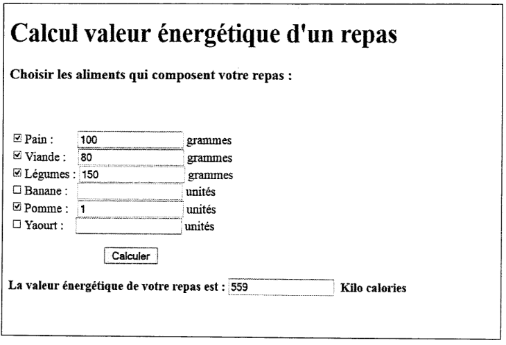

On veut réaliser une page Web statique contenant un formulaire permettant de calculer la valeur énergétique d'un repas en kilo calorie. L'utilisateur sélectionne, dans des cases à cocher, les aliments qui composent le repas avec les quantités, puis clique sur le bouton < Calculer) pour afficher le total des calories du repas sachant que :
- 100 grammes de pain donne 2TSkilo calories
- 100 grammes de viandes donne 180 kilo calories
- 100 grammes de légumes donne 40 kilo calories
- 1 fruit de banane donne 116 kilo calories
- 1 fruit de pomme donne 80 kilo calories
- 1 yaourt donne 140 kilo calories

- Ecrire le code HTML de cette page.(2 pts)
- Ecrire le code javaScript ou jQuery associé au bouton <<Calculer >>; tenir compte de la validation suivante : Au moins une case à cocher doit être sélectionnée sinon afficher un message d'erreur.(4 pts)